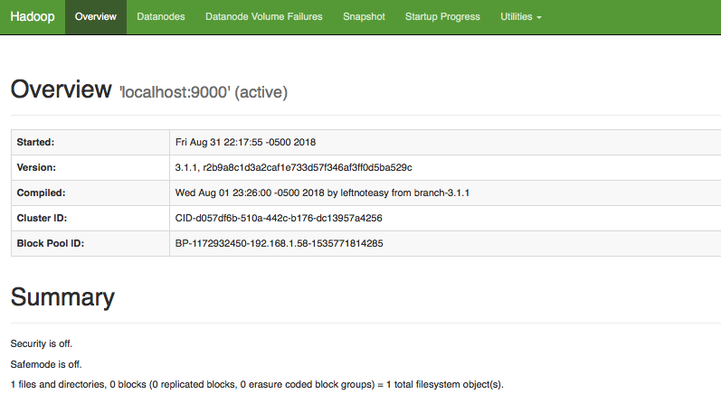

(Opcional) Hadoop/MapReduce – WordCount en Java (Modo Pseudo)¶
30 min | Última modificación: Junio 22, 2019
Definición del problema¶
Se desea contar la frecuencia de ocurrencia de palabras en un conjunto de documentos. Debido a los requerimientos de diseño (gran volúmen de datos y tiempos rápidos de respuesta) se desea implementar una arquitectura Big Data. El código debe ser escrito en Java y correrse en el ámbiente distribuido.
A continuación se generarán tres archivos de prueba para probar el sistema.
[1]:
## Preparación del directorio de trabajo
!rm -rf input output
!mkdir input
[2]:
%%writefile input/text0.txt
Analytics is the discovery, interpretation, and communication of meaningful patterns
in data. Especially valuable in areas rich with recorded information, analytics relies
on the simultaneous application of statistics, computer programming and operations research
to quantify performance.
Organizations may apply analytics to business data to describe, predict, and improve business
performance. Specifically, areas within analytics include predictive analytics, prescriptive
analytics, enterprise decision management, descriptive analytics, cognitive analytics, Big
Data Analytics, retail analytics, store assortment and stock-keeping unit optimization,
marketing optimization and marketing mix modeling, web analytics, call analytics, speech
analytics, sales force sizing and optimization, price and promotion modeling, predictive
science, credit risk analysis, and fraud analytics. Since analytics can require extensive
computation (see big data), the algorithms and software used for analytics harness the most
current methods in computer science, statistics, and mathematics.
Writing input/text0.txt
[3]:
%%writefile input/text1.txt
The field of data analysis. Analytics often involves studying past historical data to
research potential trends, to analyze the effects of certain decisions or events, or to
evaluate the performance of a given tool or scenario. The goal of analytics is to improve
the business by gaining knowledge which can be used to make improvements or changes.
Writing input/text1.txt
[4]:
%%writefile input/text2.txt
Data analytics (DA) is the process of examining data sets in order to draw conclusions
about the information they contain, increasingly with the aid of specialized systems
and software. Data analytics technologies and techniques are widely used in commercial
industries to enable organizations to make more-informed business decisions and by
scientists and researchers to verify or disprove scientific models, theories and
hypotheses.
Writing input/text2.txt
Solución¶
En este tutorial se utiliza la misma implementación del tutorial anterior.
Paso 1.¶
Este paso es idéntico en el tutorial anterior. Se implementa el algoritmo de conteo de palabras y se guarda en el archivo WordCount.java.
[5]:
%%writefile WordCount.java
import java.io.IOException;
/*
* Esta clase permite separar una frase (texto)
* en las palabras que lo conforman. La lista
* resultante puede ser iterada en un ciclo for
*/
import java.util.StringTokenizer;
/*
*
* Librerias requeridas para ejecutar Hadoop
*
*/
import org.apache.hadoop.conf.Configuration;
import org.apache.hadoop.fs.Path;
import org.apache.hadoop.io.IntWritable;
import org.apache.hadoop.io.Text;
import org.apache.hadoop.mapreduce.Job;
import org.apache.hadoop.mapreduce.Mapper;
import org.apache.hadoop.mapreduce.Reducer;
import org.apache.hadoop.mapreduce.lib.input.FileInputFormat;
import org.apache.hadoop.mapreduce.lib.output.FileOutputFormat;
/*
* Esta clase implementa el mapper y el reducer
*/
public class WordCount {
public static class TokenizerMapper
extends Mapper<Object, Text, Text, IntWritable>{
private final static IntWritable one = new IntWritable(1);
/*
* en esta variable se guarda cada palabra leida
* del flujo de entrada
*/
private Text word = new Text();
/*
* Este es el mapper. Para cada palabra
* leída, emite el par <word, 1>
*/
public void map(Object key, // Clave
Text value, // La linea de texto
Context context // Aplicación que se esta ejecutando
) throws IOException, InterruptedException {
// Convierte la línea de texto en una lista de strings
StringTokenizer itr = new StringTokenizer(value.toString());
// Ejecuta el ciclo para cada palabra
// de la lista de strings
while (itr.hasMoreTokens()) {
// obtiene la palabra
word.set(itr.nextToken());
// escribe la pareja <word, 1>
// al flujo de salida
context.write(word, one);
}
}
}
public static class IntSumReducer
extends Reducer<Text,IntWritable,Text,IntWritable> {
// Clase para imprimir un entero al flujo de salida
private IntWritable result = new IntWritable();
// Esta función es llamada para reducir
// una lista de valores que tienen la misma clave
public void reduce(Text key, // clave
Iterable<IntWritable> values, // lista de valores
Context context // Aplicación que se esta ejecutando
) throws IOException, InterruptedException {
// itera sobre la lista de valores, sumandolos
int sum = 0;
for (IntWritable val : values) {
sum += val.get();
}
result.set(sum);
// escribe la pareja <word, valor> al flujo
// de salida
context.write(key, result);
}
}
/*
* Se crea la aplicación en Hadoop y se ejecuta
*/
public static void main(String[] args) throws Exception {
Configuration conf = new Configuration();
/*
* El job corresponde a la aplicacion
*/
Job job = Job.getInstance(conf, "word count");
/*
* La clase que contiene el mapper y el reducer
*/
job.setJarByClass(WordCount.class);
/*
* Clase que implementa el mapper
*/
job.setMapperClass(TokenizerMapper.class);
/*
* El combiner es un reducer que se coloca a la salida
* del mapper para agilizar el computo
*/
job.setCombinerClass(IntSumReducer.class);
/*
* Clase que implementa el reducer
*/
job.setReducerClass(IntSumReducer.class);
/*
* Salida
*/
job.setOutputKeyClass(Text.class);
job.setOutputValueClass(IntWritable.class);
/*
* Formatos de entrada y salida
*/
FileInputFormat.addInputPath(job, new Path(args[0]));
FileOutputFormat.setOutputPath(job, new Path(args[1]));
// resultado de la ejecución.
System.exit(job.waitForCompletion(true) ? 0 : 1);
}
}
Writing WordCount.java
Paso 2¶
Este paso es idéntico en el tutorial anterior. Se realiza la compilación del programa. Para que el programa se ejecute correctamente, se debió definir la variable de entorno $HADOOP_HOME, la cual apunta al directorio donde se encuentra Hadoop.
[6]:
## compila el programa
!$HADOOP_HOME/bin/hadoop com.sun.tools.javac.Main WordCount.java
Paso 3¶
Este paso es idéntico en el tutorial anterior. Se genera el archivo de aplicación de Java, para luego ejecutarlo usando Hadoop.
[7]:
## genera el archivo *.jar para ejecutarlo en hadoop
!jar cf wc.jar WordCount*.class
El archivo wc.jar debe aparecer en el directorio actua.
[8]:
!ls *.jar
wc.jar
Paso 4¶
Se verifica que la instalación este configurada para correr en modo pseudo-distribuido, permitiendo varios hilos de procesamiento. Este modo es similar a la ejecución en un cluster. En este caso, el usuario debe verificar el contenido de los archivos etc/hadoop/core-site.xml y etc/hadoop/hdfs-site.xml que se encuentran en el directorio de instalación de Hadoop. Véase http://hadoop.apache.org/docs/current/hadoop-project-dist/hadoop-common/SingleCluster.html
[9]:
%%bash
cat <<EOF > $HADOOP_HOME/etc/hadoop/core-site.xml
<?xml version="1.0" encoding="UTF-8"?>
<?xml-stylesheet type="text/xsl" href="configuration.xsl"?>
<configuration>
<property>
<name>fs.defaultFS</name>
<value>hdfs://localhost:9000</value>
</property>
</configuration>
EOF
[10]:
%%bash
cat <<\EOF > $HADOOP_HOME/etc/hadoop/hdfs-site.xml
<?xml version="1.0" encoding="UTF-8"?>
<?xml-stylesheet type="text/xsl" href="configuration.xsl"?>
<configuration>
<property>
<name>dfs.replication</name>
<value>1</value>
</property>
</configuration>
EOF
Paso 5¶
Para ejecutar Hadoop en modo pseudo-distribuido, debe formatear el sistema de archivos (si aún no lo ha hecho). Abra el Terminal y ejecute
ssh-keygen -t rsa -P '' -f ~/.ssh/id_rsa
cat ~/.ssh/id_rsa.pub >> ~/.ssh/authorized_keys
chmod 0600 ~/.ssh/authorized_keys
y luego formatee el sistema hdfs
$HADOOP_HOME/bin/hdfs namenode -format
Seguidamente, debe iniciar el servicio. Para ello, en la consola de comandos (no se puede realizar directamente desde Jupyter) ejecute:
$HADOOP_HOME/sbin/start-dfs.sh
Una vez se haya iniciado el servicio, verifique que la interface a NameNode funcione correctamente. Abra la dirección http://localhost:9870. La interfaz debe ser similar a la que aparece en la siguiente figura.

Paso 6¶
Copie los archivos de entrada al HDFS para que puedan ser ejecutados por Hadoop.
La gestión de archivos entre el sistema local y el HDFS se realiza mediante comandos similares a los del sistema operativo Unix en Terminal. A continuación se resumen los principales comandos.
hadoop fs -help: Imprime la ayuda en pantalla para todos los comandos.
Gestion de directorios y archivos.
hadoop fs -ls <path>hadoop fs -mkdir <path>hadoop fs -rmdir <path>hadoop fs -cp <src> <dest>hadoop fs -mv <src> <dest>hadoop fs -rm <path>hadoop fs -cat <path>hadoop fs -head <path>hadoop fs -tail <path>hadoop fs -text <path>. Imprime el arachivo en<path>y lo imprime en formato texto. Soporta archivos zip, TextRecordInputStream y Avro.hadoop fs -stat <path>: Imprime estadísticos de<path>.
Transferencia de información entre el sistema local y el HDFS.
hadoop fs -get <src> <localdest>/hadoop fs -copyToLocal <src> <localdest>. Copia el contenido de<src>en el HDFS en<localdest>en el sistema local.hadoop fs -put <localsrc> <dest>/hadoop fs -copyFromLocal <src> <localdest>. Copia el contenido de<localsrc>en el sistema local a<dest>en el HDFS.hadoop fs -count <path>. Cuenta el número de directorios, archivos y bytes en<path>.hadoop fs -appendToFile <localsrc> <dest>: pega al final de<dest>el contenido de los archivos en<localsrc>.
[10]:
## crea el directorio para los archivos de entrada
!$HADOOP_HOME/bin/hadoop fs -mkdir /input
[11]:
!$HADOOP_HOME/bin/hadoop fs -ls /
Found 1 items
drwxr-xr-x - jdvelasq supergroup 0 2018-10-15 20:34 /input
[14]:
## Copia el contenido de la carpeta input a la carpeta input en el HDFS
!$HADOOP_HOME/bin/hadoop fs -put ./input /input
put: File /input/input/text0.txt._COPYING_ could only be written to 0 of the 1 minReplication nodes. There are 0 datanode(s) running and no node(s) are excluded in this operation.
put: File /input/input/text1.txt._COPYING_ could only be written to 0 of the 1 minReplication nodes. There are 0 datanode(s) running and no node(s) are excluded in this operation.
put: File /input/input/text2.txt._COPYING_ could only be written to 0 of the 1 minReplication nodes. There are 0 datanode(s) running and no node(s) are excluded in this operation.
[14]:
## verifica el contenido del directorio
!$HADOOP_HOME/bin/hadoop fs -ls /input/*
Found 3 items
-rw-r--r-- 1 jdvelasq supergroup 1092 2018-10-15 20:27 /input/input/text0.txt
-rw-r--r-- 1 jdvelasq supergroup 351 2018-10-15 20:27 /input/input/text1.txt
-rw-r--r-- 1 jdvelasq supergroup 439 2018-10-15 20:27 /input/input/text2.txt
Paso 8¶
Se visualiza la salida del programa.
[2]:
## Contenido del directorio output
!$HADOOP_HOME/bin/hadoop fs -ls /output
[19]:
## imprime el resultado en pantalla
!$HADOOP_HOME/bin/hadoop fs -cat /output/part-r-00000 | head
cat: `/output/part-r-00000': No such file or directory
Restaura los archivos y limbia el directorio de trabajo
[1]:
%%bash
cat <<EOF > $HADOOP_HOME/etc/hadoop/core-site.xml
<?xml version="1.0" encoding="UTF-8"?>
<?xml-stylesheet type="text/xsl" href="configuration.xsl"?>
<configuration>
</configuration>
EOF
[2]:
%%bash
cat <<\EOF > $HADOOP_HOME/etc/hadoop/hdfs-site.xml
<?xml version="1.0" encoding="UTF-8"?>
<?xml-stylesheet type="text/xsl" href="configuration.xsl"?>
<configuration>
</configuration>
EOF
[3]:
## se limpia el directoroio de trabajo
!rm WordCount*.* *.jar
!rm -rf input output
!$HADOOP_HOME/bin/hadoop fs -rm /input/* /output/*
!$HADOOP_HOME/bin/hadoop fs -rmdir /input /output
rm: WordCount*.*: No such file or directory
rm: *.jar: No such file or directory
rm: `/input/*': No such file or directory
rm: `/output/*': No such file or directory
rmdir: `/input': No such file or directory
rmdir: `/output': No such file or directory